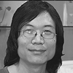

征稿时间：2016.12.05-2017.02.11
一、大赛背景
智慧城市是信息化全局在区域的缩影， 是城市可持续发展与新一代信息技术结合的产物，更是现代化城市发展的更高形态， 其核心在于充分运用云计算、物联网、大数据等新一代信息技术，促进城市规划、建设、管理和服务的智慧化实践。智慧城市以人、 自然与社会的和谐平衡为重点，彻底改善居民的生存方式和生活质量，整体提升城市的综合承载能力，推动经济和社会科学发展。
2013年1月29日，深圳市坪山新区向住建部申请成为全国首批国家智慧城市试点单位。提出以信息化手段大幅提升新区软实力， 发挥软环境对综合实力的乘数效应，将坪山打造成为环境优美和谐、资源可持续利用、公众生活幸福、先进产业发达、城市治理睿智、国际化程度高的城市。 到2017年底将初步建成“智慧”的新型城区，实现“基于云架构的集约政府”和“基于开放数据的开放社会”的总目标。
二、大赛目的
为了进一步提升“智慧坪山”的整体形象、丰富“智慧坪山”的文化内涵，提高“智慧坪山”的知名度。
大赛旨在从“智慧城市”新理念出发，向全球征集 “智慧坪山”的标志设计，为“智慧坪山”提供崭新的对外标志。
大赛旨在从“智慧城市”新理念出发，向全球征集 “智慧坪山”的标志设计，为“智慧坪山”提供崭新的对外标志。
三、组织结构
主办单位：深圳市坪山新区管委会
承办单位：第一设计网
四、参赛对象
1.从事或具备相应专业能力者（组织和个人名义不限）均可参加。
2.任何参与本次大赛评选工作的个人，不具有参赛资格。
五、大赛评委

张卫民
深圳市包装设计协会资深会员
HIII国际创意联盟核心成员
中国视觉战略联盟成员
跨界创意人、艺术家
刘永清
深圳市包装设计协会资深会员
国际CCII形象设计研究会会员
中国品牌年鉴编委
跨界创意人、艺术家
李明亮
广州平面设计师联盟(GGDA)理事
视觉战略联盟SAV（中国）创始人之一
“2015第七届法国poster for tomorrow国际海报展”评委
苏敏
上上微笑品牌策划有限公司合伙人&设计总监
深圳市平面设计协会SGDA会员
广州市平面设计协会GGDA会员
视觉战略联盟成员
廖波峰
深圳市有料设计有限公司创作总监
深圳市平面设计协会（SGDA）会员
北京师范大学（珠海校区）教师
六、奖项设置
一等奖：1名（奖金50000元/人+获奖证书+奖杯）
二等奖：3名（奖金10000元/人+获奖证书+奖杯）
三等奖：4名（奖金4500元/人+获奖证书+奖杯）
优秀奖：50名（获奖证书）
人气奖：1名(奖金2000元）
七、大赛日程
征集阶段：2016年12月 5日-2017年2月10 日
评选阶段：2017年2月15日-2017年3月13日
（1）初评日期：2017年2月15日-2017年2月22日
（2）终评日期：2017年2月27日-2017年3月13日
公布结果：2017年3月27日
八、参与方式
1.大赛作品于大赛官网www.dysj.com在线提交。
2.参赛者可以提交多套作品，每次只可上传一套（一件或一系列）作品，不可多套作品混杂一次上传。
九、设计要点
1.能充分体现“智慧坪山”的建设理念和建设精神；
2.应高度概括“智慧坪山”的内涵特点，主题突出，鲜明生动，蕴涵深刻，寓意贴切；
3.要简练明确，即深刻又通俗，符合“智慧坪山”未来发展要求，又具有现代化、国际化的审美观和一定的艺术风味；
4.便于运用各种工艺手段生产和制作，易于在公共场所、主体建筑展示、宣传悬挂及纪念品、印刷品上使用；
5.设计作品应包括图像设计文件和设计理念说明两部分
6.保证作品为原创
十、作品规格
文件格式：JPG / PNG
分 辨 率：300dpi
尺 寸：210MM（宽）X 297MM（高）
色彩模式：RGB
单个文件大小：不大于500KB 注：（获奖作品须提交作品源文件CDR或AI）
十一、获奖通知
1.获奖通知将在获奖结果公布后3个工作日内，通过电子邮件的方式发送至获奖设计师上传参赛作品时预留的邮箱，请确认提供真实有效的联系方式。
2.请获奖设计师注意查收获奖通知邮件，并根据邮件内容在5个工作日内配合主办方完成信息回执表及获奖作品源文件收集、版权归属协议签署、奖金奖品发放等工作。 获奖设计师若在获奖结果公布后5个工作日内未收到获奖通知邮件,请尽快联系我们。
电话：400-827-1811
官方邮箱：email@dysjwang.com
3.若获奖设计师在获奖结果公布后10个工作日内对获奖通知未做回应或放弃履行相关版权转让或授权义务，则视为放弃奖项。
十二、参赛要求
1. 主题鲜明，创意独特，构思精巧。具有思想性、艺术性、时代性、通俗性。艺术风格不限，创作形式不限，形态视觉语言健康向上。
2.参赛者提交的参赛作品均须未被商用或授权他人使用，必须为参赛者原创，不得抄袭、盗用他人作品，且版权未移交他人。若在比赛或商业应用过程中发生版权纠纷，
其法律责任由参赛者本人承担。
3. 参赛期间，参赛者不得将参赛作品转让或授权给任何第三方，不得用参赛作品参与与本赛事相同或类似的其他活动。
4. 如多人合作，需征得所有合作者同意并标明所有合作者姓名；同一用户名可上传多组不同参赛作品，评选结果以作品为单位，即同一用户名可获得多个奖项。
5. 为保证本次赛事活动的公平公正，参赛作品不得添加任何与本次大赛无关的第三方LOGO。
6. 参赛作品均不得在内容中显示参赛者的相关信息。
7. 主办单位有权对参赛的获奖作品编辑成册，推广印刷或展览发行，并在使用过程中尊重参赛者的署名权。
8. 每件参赛作品提交时，均需附带创意文字说明。
9. 送选作品不予退还，请作者自留备份。
十三、相关声明
1.参赛者注册填写的信息必须真实有效，获奖者于第一设计网实名认证提供的身份证明材料必须与领取奖金银行卡开户人信息保持一致。
大赛组委会有责任确保参赛选手身份信息仅用于大赛评奖与第一设计网注册使用，除法律规定和政府机关要求外，不泄露给任何第三方组织或个人。
2. 所有获奖作品的完整版权将转让至主办方公司（或其指定的公司），作者需协助签署《著作权转让协议》。主办方享有对相应设计方案进行再设计、生产、销售、展示、出版等全部权益，
作者不得将此权利再次授权任何其他个人或机构。作者保留对其作品的永久署名权。
3.其余未获奖作品的版权，归原作者所有。主办单位及承办单位拥有对所有参赛作品进行展示、报道、宣传及用于市场活动的权利，作者保留对其作品的署名权。
主办方如需对该作品进行开发、生产、销售等商业用途，需与作者协商，取得作者书面许可。
4.组委会对于用于任何用途的图片，均将署名作者真实姓名，确保署名权。
5.评委会的评审获奖结果决定视为最终决定，不受理任何途径的申诉。
6.所有参赛者视为同意本次大赛活动规则。